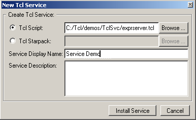
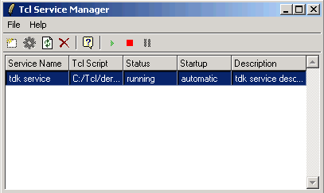

Windows Services are applications that run in the background on Windows systems. These applications have no user interface, as they are designed to run with no user intervention. Sometimes a service has an administrative tool for configuration and interaction; however, the service itself runs independently.
Services are usually automatically loaded whenever the system boots. They run outside of the context of the user (if any) who is currently logged in on the system. Therefore, the service's privileges are separate from the user login, and are tied to the service itself, not the user who launches the service.
The TclApp component of the Tcl Dev
Kit is used to create Tcl applications that will be deployed as services. The
Service Manager is used to install the service onto the current
system, or to remove a Tcl service that was previously installed. The
Tcl Dev Kit includes a base kit (Tcl/bin/base-tclsvc*) for
creating portable services. These must be installed according to the instructions
in the section Installing a Service
on a System Without the TDK.
To run the Tcl Dev Kit Service Manager, select Tcl Dev Kit Tcl Service
Manager from the Tcl Dev Kit program group on the Windows Start menu.
Alternatively, launch the Service Manager from the command line. On Windows
systems, enter tclsvc.exe.
To install a new service, select File | New Tcl Service from the menu, or click the New Service button. The following dialog will be displayed.
To remove a service, in the main Service Manager display, select the service in the list and click the Remove button.
It is not necessary to use the Tcl Dev Kit Service Manager to install services (although the Service Manager provides greater control over the installed service, such as the ability to stop or start it). Services built with TclApp using the base-tclsvc* prefix file can be installed on machines other than those they were built on, including systems where the Tcl Dev Kit is not installed.
On systems where the Tcl Dev Kit Service Manager is not installed, use the following syntax to install a service:
service.exe ServiceName -install
service.exe is the application built with TclApp.
ServiceName corresponds to the Service Display
Name in the Service Manager, and will determine the name displayed
in the Windows Service Manager. The -install switch installs
service.exe as a service. To remove a service, substitute the
-remove switch; to test a service, substitute the
-debug switch. Use the Windows Service Manager (Control
Panel | Administrative Tools | Services) to perform other
administrative tasks.
Services can be started, stopped or paused using either the Tcl Dev Kit Service Manager, or using the Windows Services tool (generally accessible via the Administrative Tools menu option in the Control Panel). The interface for the Tcl Dev Kit Service Manager is shown below.
Use the Start, Stop and Pause buttons to change the current status of the service.
To change the font size displayed in the Service Manager, press
Ctrl-plus to increase the font size or Ctrl-minus to
decrease the displayed font size. If using Windows with a mouse wheel, you can
alternatively press the Ctrl key and then rotate the mouse wheel to
increase or decrease the font size displayed in the Service Manager.
Because services can be started and stopped using the Windows Service dialog, the Tcl Dev Kit Service Manager includes a refresh function for refreshing the display of the service status. To refresh the display, select File | Refresh from the menu, or click the Refresh button.